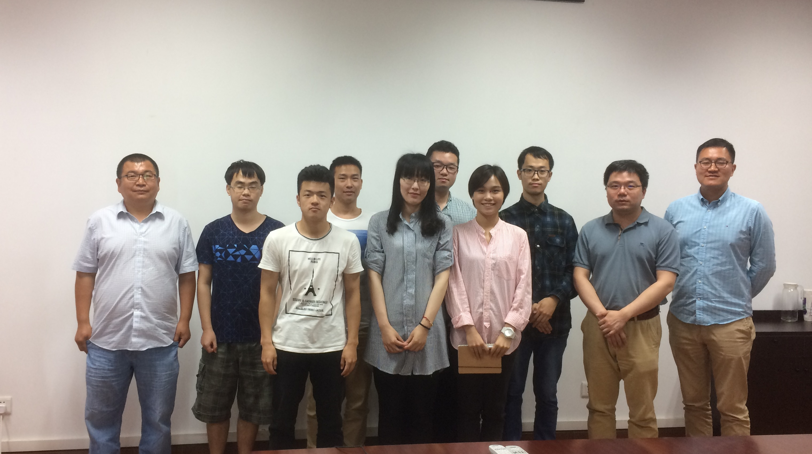
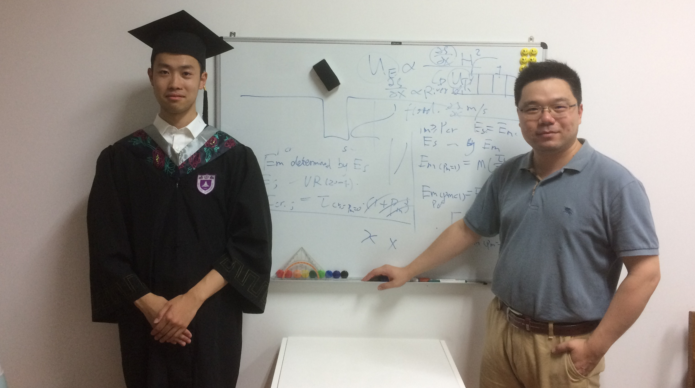

Home
CV
Research
Academics
Gallery
Contact
My origin of fieldwork: Saltmarsh cliff stability study, May 2015

|

|
| RTK base station setup |
Over the tidal creek
(from left to right) Liang, Tian, Dandan |

|

|
Saltmarsh plants
Upper: Spartina alterniflora
Lower: Spartina anglica | Suaeda salsa |
Saltmarsh edge cliff,
indicator of coastal erosion |
Bio-geomorphological study of Spartina alterniflora saltmarshes, Jul - Aug 2015
 |
 |
| Dr. Wenjing Xie and me on the mudflat |
Counting Spartina in a quadrat |
 |
 |
| Splitting sediment core into bags |
The after-work feast |
Practice of geographical sciences in Lushan Mountain, Sep 2015

With team members and our teacher, Dr.
Jiangfeng Shi, at Lushan Building
 |
 |
| The Wangjiapo slope |
Lulin Lake |
 |
 |
| Soil profile at Huanglong Temple (Alpine yellow soil) |
Climbing up a dune near Poyang Lake |
 |
 |
| Observation of paddy soil in the cropland |
Flow measurement in Changchong River |
 |
 |
| Measuring dissolved oxygen of water sample |
Working on soil type pre-mapping |
 |
 |
| Model of Lushan Church in SketchUp |
Cross profiles of Changchong River in ArcMap |
Coral-reef dynamics study, Jan 2016
 |
 |
| Wave breaking at the front of a sand spit |
Climbing up a dune to release the drone |
 |
 |
| Observing the beach stratigraphy |
Coral collection |
 |
 |
| Moving a fragment of coral reef |
Remains of a jellyfish |
 |
 |
| Picking up a gourd |
Mangrove habitat at Dongzhai Port Nature Reserve |
 |
 |
| Ancient salt ponds |
Boulder deposits at Xiaodonghai, Sanya |
Geological excursion in the Western Alps, Jul 2016

Group photo at le Chenaillet, alt. 2650m
 |
 |
| Mer de Glace near Mont Blanc |
Basalt (ancient Liguro-Piemontais Ocean) and glacier |
In-situ sediment transport observation in South Yellow Sea, Aug 2016
 |
 |
| Practice of tripod setup |
On-board tripod setup and instrument deployment |
 |
 |
| Recycling the tripod |
Back to Yangkou Port |
B.Sc. Thesis Defense, Jun 2017
|  |
 |
| The defense group |
B.Sc. Tian Zhao and Dr. Qian Yu |
ECSA 2017 Conference, Shanghai, Oct 2017
Thank you for your attention! Click here to scroll back to the top.